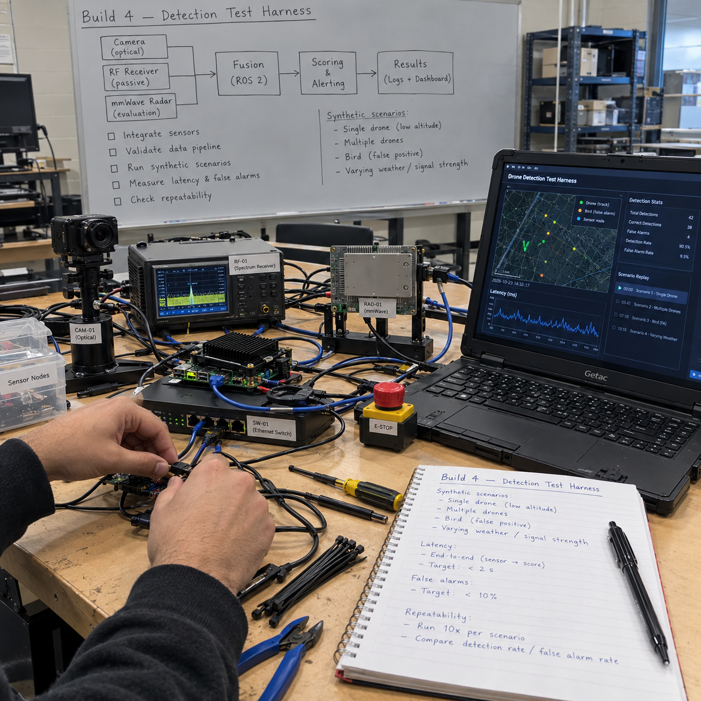

Counter-Drone Test-and-Scoring Harness with Sensor-Fleet Operations
A test-and-scoring harness for counter-drone sensors: SAPIENT (BSI Flex 335) interfaces on the nodes, a TAK bridge, scenario cards mirroring the IDEaS sandbox, Stone Soup metrics, a Monte Carlo coverage planner, and fleet operations with signed OTA and health monitoring.
Overview
This is a published build guide for a counter-drone test-and-scoring harness: software that connects low-cost sensor nodes to military command-and-control standards (SAPIENT and Cursor on Target), runs repeatable YAML scenario cards against time-synced ground truth, scores performance with Stone Soup metrics, plans sensor coverage, and operates the resulting node fleet with signed updates and health monitoring.
Status: Planned. Nothing on this page is built, tested, measured, or flown yet. The guide is written against real Canadian government requirements: the IDEaS counter-drone sandbox guide, which asks for systems that integrate into military C2 and names networks of low-cost sensors as an emphasis area, and the CAF national counter-drone tender, which asked a contractor to design, install, integrate, test, validate, maintain, sustain and modernize the capability as a service (verify dates/scope). This build puts DevOps and test discipline into that gap: the boring, decisive work of knowing what a sensor network actually does and proving it with numbers.
The sandbox itself rewards honesty. Teams are encouraged to push a system to failure so its limits are understood, and plain radar, acoustic, RF or optical detection is less likely to be selected unless it is clearly improved. A scoring harness is exactly the tool for that: it produces the detection probability vs range curves, false-alarm rates and failure envelopes that make a submission credible, and it stays useful for any sensor build, including the counter-drone sensor fusion build on this site.
The work is software and simulation first, which fits the southern Ontario winter calendar: this is one of the builds scheduled for the October to December window, before any outdoor drone work resumes in spring. It follows the shared rules for all six defence builds on this site: defensive only, synthetic data where anything mimics protected material, testing only my own gear with permission, and one repo with README, docs, sim, test, data, results, LICENSE, SBOM and signed releases.
Concept Illustrations

Target Spec: What the IDEaS Sandbox Asks
The IDEaS counter-drone sandbox guide defines threat classes, hard cases, six scenarios and the C2 protocols in use. The table below restates those requirements as the spec sheet this harness is built to serve. The harness does not itself detect drones; it measures how well a sensor network meets these requirements.
| Requirement area | Sandbox spec | How the harness serves it |
|---|---|---|
| Threat class: micro UAS | Under 2 kg, up to 200 ft AGL, about 5 km radius, up to 200 km/h | Scenario cards and SITL truth matching this class |
| Threat class: mini UAS | 2-15 kg, up to 3,000 ft AGL, about 25 km radius, up to 200 km/h | Scenario cards and SITL truth matching this class |
| Hard cases | Drones under 250 g, fast FPV, swarms of 3+, fibre-optic tethered drones (tethers to 30 km), birds and clutter, rain, fog, snow, night | Environment and class tags on every scenario card; birds logged as their own false-alarm class |
| Early warning range | Well beyond 3 km described as achievable | First-detection range distribution metric |
| Scenario 1 | Fixed base, 2.5 km radius | Coverage planner target with node count and spacing stated |
| Scenario 2 | Five-vehicle patrol | Scenario card format; live version not planned |
| Scenario 3 | 12 dismounted soldiers | Scenario card format; live version not planned |
| Scenario 4 | Urban, 4x4 blocks up to 10 storeys | Scenario card format; live version not planned |
| Scenario 5 | Frigate-sized ship | Scenario card format; live version not planned |
| Scenario 6 | 10 km linear border, state node count and spacing | Coverage planner target with cost per kilometre |
| C2 protocols in use | JREAP-C J-series, VMF K-series, Cursor on Target, SAPIENT | SAPIENT on the nodes, CoT bridge to TAK; JREAP-C and VMF out of scope |
| Emissions | Low emissions preferred; emitters need a DND 552 spectrum form | Harness is receive-only; no emitters planned |
| Selection guidance | Detect-only systems are accepted; plain single-sensor detection less likely selected unless clearly improved | The harness supplies the measured improvement evidence |
What the Hobby-Scale Version Proves
A solo bench build cannot field a national counter-drone capability, and this page does not pretend otherwise. What it can prove, with published data, is the engineering discipline the sandbox and the tender both ask for:
- Standards compliance at the edge: sensor nodes that register and report over SAPIENT (BSI Flex 335) protobuf messages, verified against the official open-source compliance test harness, and bridged into TAK as Cursor on Target markers.
- Repeatable, honest scoring: the same scenario cards run in simulation and against recorded real logs, scored with Stone Soup SIAP metrics, OSPA and CLEAR-MOT, with regression thresholds in CI so a change that degrades detection fails the build.
- Quantified coverage: measured detection probability vs range turned into node counts, spacing and cost per kilometre for the fixed-base and linear-border scenarios via Monte Carlo planning.
- Fleet operations: signed A/B over-the-air updates, Prometheus health monitoring, per-site acceptance tests and runbooks that mirror the tender lifecycle (install, integrate, test, validate, maintain, sustain, modernize).
- A published failure envelope: every metric pushed to failure, with the limit written down where others can read it.
Architecture
Every sensor node runs a small adapter that registers with the fusion node and sends status and detection reports as SAPIENT protobuf messages over TCP, the edge-to-fusion pattern defined in BSI Flex 335. The fusion node runs the open-source Dstl middleware. A bridge converts detections to Cursor on Target so they appear in TAK Server and ATAK, using snstac sapientcot where version support allows (verify), plus a native CoT output path as a fallback.
Scoring depends on truth and time. Truth comes from two sources: ArduPilot SITL multi-drone simulation feeding sensor models with detection probability and noise vs range, and recorded logs from my own drone flown with GNSS (RTK if possible). Every node gets GPS PPS and chrony so timestamps line up, and clock offset is logged as a health metric, because scoring without synchronized clocks is fiction. The scoring harness consumes fused tracks plus truth and scenario cards, and its outputs feed the coverage planner, the nightly CI regression run, and the fleet operations layer that keeps deployed nodes patched and observable.
How to Build: Phases
Ten phases, roughly in order. Weeks are planning estimates, not commitments. Each phase ends with an artifact committed to the repo; a phase is done when its artifact exists, not when the code runs once on my machine.
Phase 0: Standards (weeks 1-2)
- Read BSI Flex 335 v2 (March 2024, free from BSI; verify date) and take notes on the message set: registration, status reports, detection and track reports.
- Clone the Dstl SAPIENT middleware and compliance test harness, released open source under Apache 2.0 in 2022. That release predates Flex 335 v2, so check which interface version the middleware speaks before building on it.
- Write down the protobuf-over-TCP edge-to-fusion pattern as the architecture contract for every later phase.
Phase 1: SAPIENT adapter and TAK bridge (weeks 2-5)
- Build a node adapter that registers with the fusion node and sends status and detection reports using the official protos.
- Verify the adapter against the official compliance test harness; a passing compliance run is the phase gate.
- Forward detections to TAK with snstac sapientcot (verify version support) and add a native CoT output so nodes can emit Cursor on Target directly when the bridge path is not needed.
- Confirm markers appear in ATAK with correct position and identity fields.
Phase 2: Ground truth and time (weeks 4-6)
- Use my own drone's ArduPilot logs with GNSS as truth; add RTK if possible for tighter truth position.
- Put GPS PPS plus chrony on every node so all clocks discipline against the same pulse.
- Log clock offset as a health metric; scoring is only valid when truth and sensor timestamps agree.
Phase 3: Scenario cards in YAML (weeks 5-6)
- Define a card schema: approach type (radial, tangential, hover, descent), speed band, altitude, drone count, class (micro or mini UAS), environment tags (rain, fog, snow, night, clutter), and an explicit detection definition.
- Write cards mirroring the sandbox scenarios: fixed base 2.5 km radius, five-vehicle patrol, 12 dismounted soldiers, urban 4x4 blocks up to 10 storeys, frigate-sized ship, 10 km linear border.
- Define detection before flying anything; a detection definition written after seeing data is not a definition.
Phase 4: Simulation at scale (weeks 6-9)
- Stand up ArduPilot SITL multi-drone instances as truth, including swarm cards of 3+ drones.
- Model sensors with detection probability and noise vs range so simulated detections behave like the real sensor class being scored.
- Make the same pipeline replay recorded real logs unchanged, so sim and live runs share one scoring path.
Phase 5: Scoring (weeks 8-10)
- Implement Stone Soup SIAP metrics: completeness, ambiguity, spuriousness, continuity.
- Add OSPA for multi-object tracking error and CLEAR-MOT for tracking identity quality.
- Add the operational metrics: detection probability vs range, first-detection range distribution, time to first alert, false alarms per hour, localization error vs range.
Phase 6: Coverage planner (weeks 10-12)
- Take the measured detection probability vs range curve from Phase 5 scoring as input.
- Run Monte Carlo placement to compute node count and spacing for the 2.5 km fixed-base scenario and the 10 km linear-border scenario.
- Report cost per kilometre of coverage, the number the sandbox implicitly asks for when it says to state node count and spacing.
Phase 7: Continuous integration (weeks 10-13)
- Run the simulated scenario suite nightly with regression thresholds: a drop in detection probability or a rise in false alarms fails the pipeline.
- Version data with DVC so results are reproducible against the exact truth logs that produced them.
- Publish an HTML report artifact per run and ship signed container images for every component.
Phase 8: Fleet operations (weeks 12-16)
- Signed A/B over-the-air updates: Mender, RAUC, or my own signed flow; a tampered update must be rejected, reusing the secure fleet updates work.
- Prometheus health monitoring per node: battery, temperature, GNSS lock, clock offset, link quality, with alerts on drift.
- A per-site acceptance test that a node must pass before it counts as installed, plus a maintenance schedule and spares log.
- Runbooks mirroring the tender lifecycle: install, integrate, test, validate, maintain, sustain, modernize.
Phase 9: Failure envelope (ongoing)
- Push each metric to failure: increase range, speed, swarm size, clutter and weather tags until the score collapses.
- Publish the limit for each metric. The sandbox favours teams that understand where their system stops working; this phase is where that understanding is manufactured.
Spec-Gap Table
Honest status against the sandbox spec, as of publication. Everything is Planned or Not tested; nothing here is claimed beyond the build guide itself.
| Sandbox requirement | Status | Notes |
|---|---|---|
| SAPIENT (BSI Flex 335) interface on nodes | Planned | Phase 0-1; compliance test harness version predates Flex 335 v2, interface version to check |
| C2 integration: Cursor on Target / TAK | Planned | Phase 1 bridge via snstac sapientcot (verify version support) plus native CoT output |
| C2 integration: JREAP-C J-series, VMF K-series | Not planned | No equipment or access; stated honestly as out of scope |
| Micro UAS threat class coverage | Not tested | Scenario cards and SITL truth planned; no live flights yet |
| Mini UAS threat class coverage | Not tested | 25 km radius is beyond any hobby live test; simulation only |
| Drones under 250 g | Not tested | Hard case; scenario cards tagged, scoring planned |
| Fast FPV | Not tested | Speed band in card schema; sim only at first |
| Swarms of 3+ | Simulation only, planned | ArduPilot SITL multi-drone truth in Phase 4 |
| Fibre-optic tethered drones (tethers to 30 km) | Not tested | RF receive-only rules out RF detection of these; stated as a known gap |
| Birds and clutter | Planned | Logged as their own false-alarm class, not silently filtered |
| Rain, fog, snow, night | Not tested | Environment tags on cards; real-weather runs wait for seasons and hardware |
| Early warning beyond 3 km | Not tested | First-detection range distribution will show what is real |
| Fixed base 2.5 km radius: node count and spacing | Planned | Phase 6 Monte Carlo coverage planner |
| 10 km linear border: node count and spacing | Planned | Phase 6, with cost per kilometre |
| Patrol, dismounted, urban, ship scenarios | Card format only | Cards written; live versions not planned at hobby scale |
| Low emissions / DND 552 spectrum form | Met by design | Harness is receive-only; no emitters, no form required |
| Tender lifecycle: install to modernize | Planned | Phase 8 runbooks; unproven until a real multi-node site exists |
Metrics to Publish
- Stone Soup SIAP metrics: completeness, ambiguity, spuriousness, continuity.
- OSPA (optimal subpattern assignment) for multi-object tracking error.
- CLEAR-MOT for tracking identity quality.
- Detection probability vs range, per scenario card and aggregated.
- First-detection range distribution (the early-warning number).
- Time to first alert.
- False alarms per hour, with birds and aircraft logged as their own class.
- Localization error vs range.
- Clock offset per node as a time-sync health metric.
- Coverage planner outputs: node count, spacing, cost per kilometre.
- Fleet health: battery, temperature, GNSS lock, link quality per node.
Hardware to Buy First
This build is mostly software; the plan names no exotic hardware. The list below is the minimum implied by the phases, and it will grow once a specific sensor class is chosen for the nodes.
- A drone running ArduPilot with GNSS (RTK if possible) as the known-truth target for live scoring runs.
- GPS PPS receivers and antennas, one per node, for chrony time discipline.
- Low-cost sensor nodes (acoustic, optical, or RF receive-only); the exact sensor set is chosen after Phase 0, since the sandbox deprioritizes plain unimproved detection.
- A host machine (existing homelab capacity) for the fusion node, TAK Server, scoring harness, CI runners and Prometheus.
- Spares per the Phase 8 spares log, sized once node count is known.
Safety and Legal Notes
- Defensive only: detect, score, plan. Nothing in this build jams, spoofs, or carries anything.
- RF receive-only unless licensed. Low emissions are preferred by the sandbox; any emitter would need a DND 552 spectrum form, and none is planned.
- Test only my own gear, with permission. Ground-truth drone flights follow the same Transport Canada rules as the other drone builds on this site.
- Birds and aircraft create false alarms. They are logged as their own class, never silently dropped, because hidden filtering is how false-alarm rates get lied about.
- Define detection before flying. The detection definition is part of the scenario card, written before data exists.
- Synthetic data for anything mimicking protected material, per the shared rules for all six builds.
Frequently Asked Questions
What is SAPIENT and BSI Flex 335?
SAPIENT is the counter-drone sensor fusion interface standard published by BSI as Flex 335 (version 2, March 2024, free from BSI; verify date). Messages are protobuf over TCP from edge sensor nodes to a fusion node. Dstl released open-source middleware and a compliance test harness under Apache 2.0 in 2022, which predates v2, so the interface version must be checked.
How do you score a counter-drone detection system honestly?
Fly or simulate YAML scenario cards (approach, speed band, altitude, drone count, environment tags) against time-synced ground truth, then score with Stone Soup SIAP metrics (completeness, ambiguity, spuriousness, continuity), OSPA and CLEAR-MOT, plus detection probability vs range, time to first alert, false alarms per hour and localization error.
What does the IDEaS counter-drone sandbox ask for?
Systems that integrate into military command and control (JREAP-C J-series, VMF K-series, Cursor on Target, SAPIENT), networks of low-cost sensors, and honest handling of hard cases: drones under 250 g, fast FPV, swarms of 3+, fibre-optic tethered drones, birds and clutter, and rain, fog, snow and night. Detect-only systems are accepted.
Is anything on this page built or tested yet?
No. This is a published build guide, status Planned. Every component, from the SAPIENT adapter to the coverage planner, is described as phases to execute, and the spec-gap table marks each sandbox requirement as planned or not tested. Measured results will be published here after each phase completes.
How many sensor nodes does a 2.5 km base defence need?
That is exactly what the coverage planner computes. Phase 6 takes measured detection probability vs range from scored scenarios and runs Monte Carlo placement to return node count and spacing for the 2.5 km fixed-base and 10 km linear-border scenarios, with a cost per kilometre of coverage.
Roadmap
Order of work across the six builds puts this build first, together with the secure-autonomy build, because both are software and simulation and can run through the southern Ontario winter. The calendar: now to December is this harness, the secure-autonomy build, the sovereign AI enclave, plus bench work on the Arctic drone; December to March is snow and cold field work for the outdoor builds; April to May after ice-out is water trials. That means Phases 0 through 7 of this build should be running nightly in CI before any outdoor flight season opens, and live scoring runs with the ground-truth drone slot into spring 2027.
Funding and eligibility context, named as programs without invented links: the MINERVA challenges run through Innovative Solutions Canada for incorporated Canadian companies at TRL 5-9, and the IDEaS counter-drone sandbox is open to individuals, academia, non-profits and industry, with the next sandbox expected around 2028 and every participant receiving $20,000. A published, standards-compliant, honestly scored harness is exactly the portfolio evidence those programs reward. Results will be appended to this page phase by phase, with the spec-gap table updated as rows move from Planned to tested.
Cite This Page
Citation formats
Plain text
Taki Sadik, "Counter-Drone Test-and-Scoring Harness Build Guide", TYFSADIK, https://tyfsadik.org/work/defence/counter-drone-scoring-harness.html (accessed 2026-10-24).BibTeX
@misc{sadik-counter-drone-scoring-harness,
author = {Sadik, MD. Taki Yasir Faraji},
title = {Counter-Drone Test-and-Scoring Harness Build Guide},
year = {2026},
url = {https://tyfsadik.org/work/defence/counter-drone-scoring-harness.html},
urldate = {2026-10-24}
}APA
Sadik, M. T. Y. F. (2026). Counter-Drone Test-and-Scoring Harness Build Guide. TYFSADIK. https://tyfsadik.org/work/defence/counter-drone-scoring-harness.html